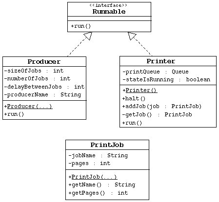

SL275: Module14: Threads
Exercise #3: Use Advanced Thread Control
(Level 3)
Objective
In this exercise you will use wait/notify and proper thread control to
create a printer manager. You will create several threads that generate
print jobs and a single print manager thread to process those jobs.
Directions

Create the PrintJob Class
- Create the PrintJob class based on the UML diagram.
Create the Producer Class
- Create the Producer class based on the UML diagram.
It must implement the Runnable interface.
- Write a constructor that initializes all four instance variables.
- The run method must generate a certain number of print jobs,
based on the numberOfJobs attribute. Give each of these jobs
a name based on the producerName and the number of the job.
The number of pages in the print job is specified by the sizeOfJobs
attribute.
- Add the print job to the printer manager via the addJob method.
This method might throw an FullQueueException, write code to
handle this occurrance. Print out a message that the producer is adding
a job to the print queue.
- Between print jobs the producer must sleep based on the delayBetweenJobs attribute.
Create the Printer Class
- Create the Printer class based on the UML diagram.
- Write a contructor that initializes the attributes appropriately.
The print queue should be big enough to handle five simultaneous jobs.
- You may want to implement this class as a Singleton.
- The printQueue attribute is a FIFO queue that holds all
print jobs that have been posted to this printer. I have included
the Java classes that you need for this data structure. Queue
is an interface of FIFO queues. CircularQueue implements a
fixed-length queue. The FullQueueException and EmptyQueueException
are thrown by the addBack and removeFront methods
respectively.
- Write a public, synchronized addJob method. This method might
throw a FullQueueException.
- Write a private, synchronized getJob method. This method might
throw a EmptyQueueException.
- Write the public, synchronized halt method. This method should
set the stateIsRunning to false.
- Write the run method. This is the heart of the print manager.
It must loop continueously, until it has been halted. It must retrieve
a print job off the queue, print out that the job is starting (and give
the name of the job), process the job (by sleeping a certain number of
milliseconds per page; 500ms/page is a good value), and then print out
that the job has completed. If no job is available, print out that the
printer is waiting for a job.
- The hard part of this exercise is where to use wait and
notify. Hint: "synchronize" the wait/notify
on the Printer object.
Create the TestPrinter Program
- This class only contains a main method.
- Have the main method create three producers, with differentt
printing characteristics: from small (5 page) to large (25 page) job
sizes, and short (2 sec) to long (10 sec) delays between jobs.
- Create a thread for the printer manager. Set the priority of this
job to the maximum. Start this thread.
- Create three threads for each producer. Start the threads.
- Wait for each producer thread to finish, using the join method.
- Finally, halt the printer manager.
Below is an example output:
C: Print manager is starting up.
C: Waiting on a job to print.
P: Adding job 'Fred#1' to the queue
C: Starting job 'Fred#1'
P: Adding job 'Elizabeth#1' to the queue
P: Adding job 'Simon#1' to the queue
C: Completed job 'Fred#1'
C: Starting job 'Elizabeth#1'
P: Adding job 'Fred#2' to the queue
P: Adding job 'Simon#2' to the queue
C: Completed job 'Elizabeth#1'
C: Starting job 'Simon#1'
P: Adding job 'Fred#3' to the queue
C: Completed job 'Simon#1'
C: Starting job 'Fred#2'
P: Adding job 'Elizabeth#2' to the queue
P: Adding job 'Simon#3' to the queue
C: Completed job 'Fred#2'
C: Starting job 'Simon#2'
C: Completed job 'Simon#2'
C: Starting job 'Fred#3'
P: Adding job 'Fred#4' to the queue
C: Completed job 'Fred#3'
C: Starting job 'Elizabeth#2'
P: Adding job 'Fred#5' to the queue
C: Completed job 'Elizabeth#2'
C: Starting job 'Simon#3'
P: Adding job 'Elizabeth#3' to the queue
C: Completed job 'Simon#3'
C: Starting job 'Fred#4'
C: Completed job 'Fred#4'
C: Starting job 'Fred#5'
C: Completed job 'Fred#5'
C: Starting job 'Elizabeth#3'
C: Completed job 'Elizabeth#3'
C: Waiting on a job to print.
C: Print manager is halted.